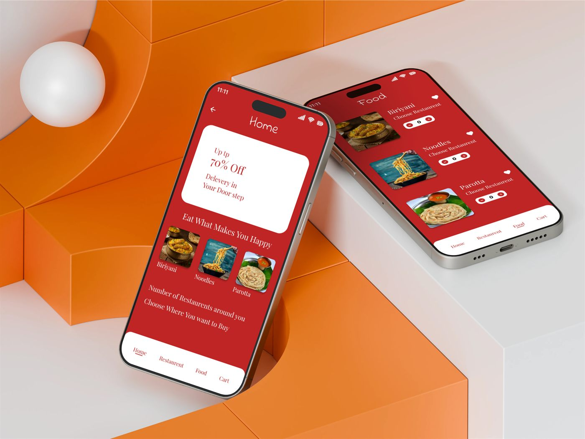
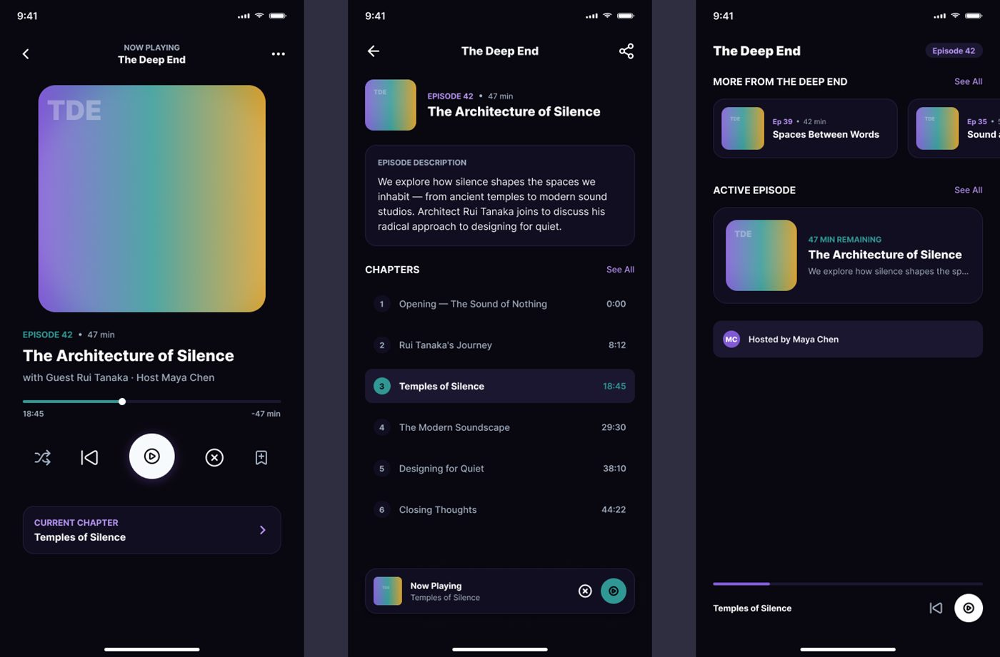
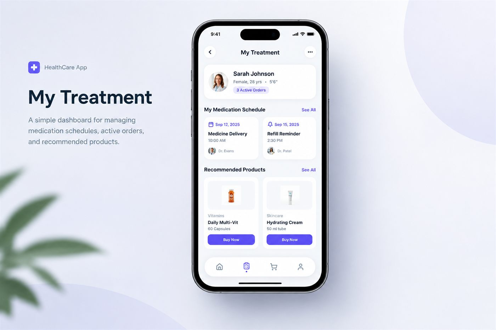
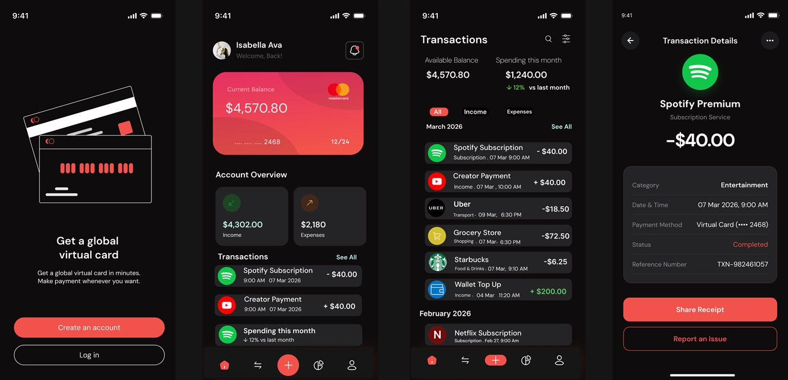

Designing for people, not pixels.
I'm Pramod — a Results-driven UX/UI Designer with hands-on experience crafting intuitive, user-centered digital products from research through high-fidelity delivery. I specialize in end-to-end design — from user research and information architecture to wireframing, prototyping, and scalable design systems. I have a demonstrated ability to translate complex user pain points into clean, functional interfaces that drive impact.
A good interface feels inevitable. I build products where research, motion and restraint collide into something simple enough to disappear — and thoughtful enough to stay with you.
For over five years I've worked across startups and studios, owning everything from the first whiteboard sketch to the final developer handoff. My work sits at the intersection of user needs and business goals — pairing usability testing with sharp visual systems to ship conversion-ready, mobile-first products.
- 04+
- 100%
- ∞

A mobile food-ordering experience redesigned for speed and appetite. Clearer menu hierarchy and a one-thumb checkout flow pushed order completion up 26% across test markets.
Open case study ↗An interface layer for a design-tooling suite. We untangled versioning, reviewing and handoff into one calm workspace — cutting round-trips between designers and developers by 40%.
Open case study ↗

A mobile fintech flow for planning and paying for treatment. We simplified estimate-to-instalment journeys and reinstated trust in an emotionally loaded moment — raising completed sign-ups by 31%.
Open case study ↗End-to-end product design for a financial platform — onboarding, portfolio views and reporting rebuilt around progressive disclosure, lifting retention and cutting onboarding drop-off nearly in half.
Open case study ↗
✳ — prototype decks, audits & more available on request.
Product design
End-to-end product thinking — from problem definition and flows to shipping high-fidelity interfaces.
UX research
Interviews, usability testing and journey mapping that keep assumptions honest and decisions grounded.
UI & visual design
Bold but disciplined visual systems — typography, color and motion that feel considered, never decorative.
Design systems
Token-based component libraries that let teams ship faster and stay consistent at scale.
Prototyping
Rapid, high-fidelity prototypes that make ideas testable long before a line of code is written.
Design strategy
Aligning product decisions with business goals — workshops, roadmaps and healthy design culture.
( 05 — Let's talk )